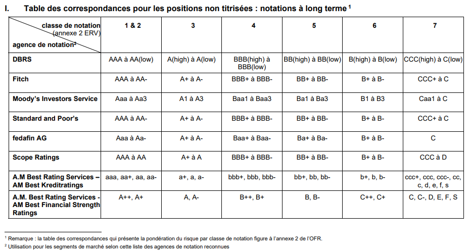
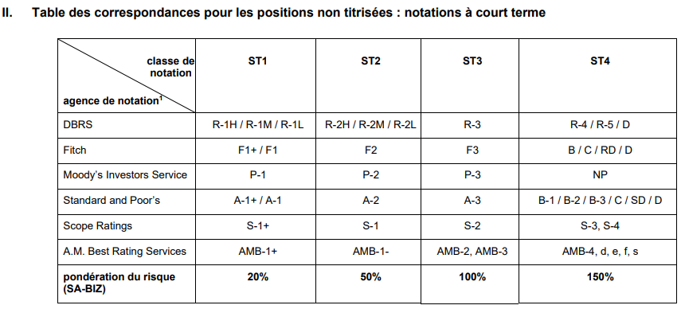

Two types of rating class exist: the short term (ST1, ST2, ST3, ST4) and long term ones (1,2,3,4,5,6,7):


Use of rating classes
Risk weights
As defined in the appendix 2 of the OFR, risk weights are used for capital adequacy purpose and computed using the long term ratings.
Haircuts
As defined in the circular 2017/07 cm 209, haircuts can be computed either with the long term rating of the emissions or the short term ratings of the emissions for short term bonds.
Computed vs delivered
The rating class of positions can be delivered in the fields core_positions.RatingClass, list_counterparties.RatingClass or list_securities.RatingClass, or computed by Mercury based on an external rating.
To have the field RatingClass computed by Mercury at the position, counterparty or security level, the table list_external_ratings should be delivered as explained below, with a corresponding ID in the field ExternalRatingId.
Id → Unique ID of the rating defined by the bank
TypeOf → Type of rating:
LongTerm
ShortTerm
RatingAgency → Rating agency
DBRS
Fitch
Moodys
SP
Fedafin
Scope
AMBestK
AMBestFS
AMBest
RatingName → Name of the rating (can be decided by the bank)
RatingValue → Value of the rating
Use of short term external ratings
Short term external ratings are only useful when it comes to computing the haircut of short term bonds for capital adequacy purpose. The definition of short term is not even provided in this context, which makes it difficult to judge when to use them for this subclass of securities. In addition, short term ratings cannot be used to compute risk weights. For this reasons and for simplification purpose:
An integer between 0 and 7 (long term rating class scale) is expected in the field RatingClass. If short term ratings are used as an input, map the short term rating into their equivalent long term rating classes for the purpose of haircuts calculation:
ST1 → 1
ST2 → 3
ST4 → 4
ST5 → 5
This delivery is expected, and if the rating classes are computed by Mercury, it is the mapping that will be applied.
As explained in the next section Cascading from one table to the other, for a security, if the field core_positions.RatingClass is not delivered, but the field list_securities.RatingClass is, the rating class will be taken from list_securities to core_positions, and in turn used to compute the risk weights for capital adequacy purpose. If it applies, and short term ratings are delivered in list_securities, short term ratings will end up being used to compute risk weights, which is incorrect. To avoid this situation, make sure the core_positions.RatingClass contains the correct rating class to compute the risk weight.
In case a bank has external ratings from multiple rating agencies available, it is the responsibility of the bank to deliver in the field ExternalRatingId the Id of the rating it want to use to compute the rating class, based on the principle described in OFR Art.64 al.3: L’utilisation des notations externes doit être appliquée de façon cohérente par les établissements selon un concept précis et spécifique.
Cascading from one table to another
The simplest delivery option is to deliver only the long term rating classes/external ratings in the table core_positions, which are then in turn used for both the risk weights and the haircuts.
Alternatively, rating classes/external ratings can be delivered in list_counterparties and/or list_securities and/or core_positions. In this case the following rules apply:
Rating class will cascade as follow:
If core_positions.RatingClass = 0 and core_positions.TypeOf != 'Security' and list_counterparties.RatingClass != 0 (join on CounterpartyId)